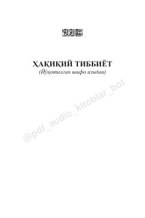

HTTabiiy shifo va sog'lom turmush tarzi bo'yicha qo'llanma.
Ushbu kitobda muallif Oydin Solih zamonaviy tibbiyotdagi kamchiliklarni tahlil qilib, inson salomatligini tabiiy usullar bilan tiklash yo'llarini yoritib beradi. Asarda noto'g'ri ovqatlanish, kimyoviy vositalar va sun'iy dori-darmonlarning organizmga ta'siri hamda ulardan xalos bo'lish, tanani tozalash va tabiiy shifo topish usullari batafsil bayon etilgan.